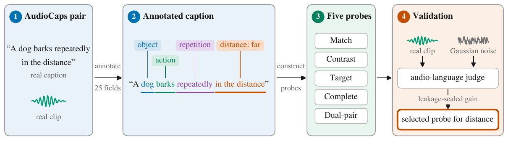
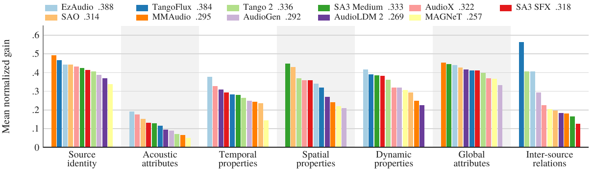

GASA: A Structured Alignment Benchmark for Text-to-Audio Generation
Anonymous submission · under review
Abstract
Text-to-audio generation has advanced faster than the methods used to evaluate it. Models are known to miss parts of a prompt, but prevailing measures judge a generated clip against its prompt as a whole and cannot show which parts are missed or where research should focus. We introduce the Generative Audio Structured Alignment (GASA) benchmark. GASA treats prompt fidelity as structured alignment, organizing the properties of a scene description into 25 fields and judging each field with a large audio-language model. Because such judges may answer from text-only priors without listening, we validate judge probes on real caption-audio pairs against a Gaussian-noise control, keeping for each field the probe whose accuracy depends most on the audio. Human raters answering the same probes on generated clips confirm that the judge detects 23 of the 25 fields in generated audio and set the ceiling each field score can attain. Using this validated judge, we evaluate 11 models on 2,500 generation prompts (100 per field). Scores vary far more across fields than across models, and every model leaves several fields near the control. Source identity is strongest, static acoustic properties weakest, and pitch and timbre are rendered more faithfully as changes than as static levels. GASA pinpoints where each model fails, giving researchers specific targets and a measure of progress toward models that realize every part of a prompt.
How a field is tested
GASA organizes the properties of a sound-scene description into 25 fields in seven dimensions (source identity, acoustic attributes, temporal properties, spatial properties, dynamic properties, global attributes, inter-source relations). Each field is tested with prompts built as minimal pairs: two prompts identical except for the value of the field under test. Every prompt is generated by every model, and each generated clip is scored by an audio-language-model judge (Qwen3-Omni) answering a probe question about the field. The probe format used for each field was selected on real caption-audio pairs by how much its accuracy depends on the audio rather than on text priors, measured against a Gaussian-noise control.

Probe formats
Scoring
A clip's score is the probability the judge assigns to the correct answer (the normalized first-token probability of the target option). For Contrast and Dual pair, the two clips of a minimal pair share one question whose correct option shifts between the clips, and the pair is scored by the product of the two probabilities. Each question is also scored against Gaussian noise, which gives the field a no-listening floor F; human raters answering the same probes on generated clips give the judge's ceiling C for the field. The paper reports the normalized gain (S − F) / (C − F), which maps the floor to 0 and the ceiling to 1, over the 23 fields with a usable ceiling.
Fields and their selected probes
Examples: one minimal pair per field
For each of the 25 fields, one minimal pair (both prompts, the judge's question, and the expected answer) with the clip every one of the eleven models generated for each prompt, next to the judge's probability of the correct answer for that clip. Scores here come from a single generation seed and the base option order; the paper's numbers average three seeds and permuted option orders. Pair selection rule: the pair (among those with values typical of caption corpora) whose two clips receive the highest average judge score across the eleven models.
Results
Eleven text-to-audio models on 2,500 prompts (100 per field), three generation seeds, option orders averaged.

Leaderboard
Normalized gain = (S − F) / (C − F) averaged over the 23 fields with a human-measured ceiling; the interval is a bootstrap 95% interval over prompts. "Without ceiling" is (S − F) / (1 − F) over all 25 fields. Match is the judge's mean probability of "yes" to the whole-prompt question.
Model outputs: one hit and one miss per model
For each model, a clip from the field where it scores highest in the paper's table (its strongest field) and one from the field where it scores lowest (its weakest field), with the judge's question and its probability of the correct answer.
BibTeX
@inproceedings{anonymous2026gasa,
title = {GASA: A Structured Alignment Benchmark for Text-to-Audio Generation},
author = {Anonymous},
year = {2026},
note = {Under review}
}